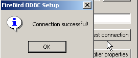
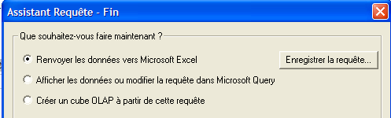
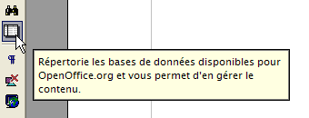
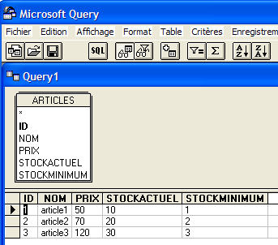

8. Installer et utiliser un pilote ODBC pour [Firebird]
8.1. Installer le pilote
Il existe de nombreuses bases de données sur le marché. Afin d’uniformiser les accès aux bases de données sous MS Windows, Microsoft a développé une interface appelée ODBC (Open DataBase Connectivity). Cette couche cache les particularités de chaque base de données sous une interface standard. Il existe sous MS Windows de nombreux pilotes ODBC facilitant l’accès aux bases de données. Voici par exemple, quelques-uns des pilotes ODBC installés sur une machine Windows XP :

Une application s’appuyant sur ces pilotes peut utiliser n’importe quelle bases de données sans ré-écriture. Le pilote ODBC s'intercale entre l'application et le SGBD. Le dialogue Application <-> pilote ODBC est standard. Si on change de SGBD, on installe alors le pilote ODBC du nouveau SGBD et l'application reste inchangée.
Le lien [firebird-odbc-provider] de la page de téléchargements de [Firebird] (paragraphe 2.1) donne accès à un pilote ODBC. Une fois celui-ci installé, il apparaît dans la liste des pilotes ODBC installés.
8.2. Créer une source ODBC
- lancer l'outil [Démarrer -> Paramètres -> Outil de configuration -> Outils d'administration -> Sources de données ODBC] :

- on obtient la fenêtre suivante :

- ajoutons [Add] une nouvelle source de données système (panneau [System DSN]) qu'on associera à la base Firebird [dbarticles] que nous avons créée au paragraphe 2.3 :

- il nous faut tout d'abord préciser le pilote ODBC à utiliser. Ci-dessus, nous choisissons le pilote pour Firebird puis nous faisons [Terminer]. L'assistant du pilote ODBC de Firebird prend alors la main :

- nous remplissons les différents champs :

le nom DSN de la source ODBC - peut être quelconque | |
le nom de la BD Firebird à exploiter - utiliser [Browse] pour désigner le fichier .gbd correspondant. Nous utilisons ici la base d'articles [dbarticles] créée page 8. | |
identifiant à utiliser pour se connecter à la base | |
le mot de passe associé à cet identifiant |
Le bouton [Test connection] permet de vérifier la validité des informations que nous avons données. Avant de l'utiliser, lancer le SGBD [Firebird] :

- valider l'assistant ODBC, en faisant [OK] autant de fois que nécessaire
8.3. Tester la source ODBC
Il y a diverses façons de vérifier le bon fonctionnement d'une source ODBC. Nous allons ici utiliser Excel :

- utilisons l'option [Données -> Données externes -> Créer une requête] ci-dessus. Nous obtenons la première fenêtre d'un assistant de définition de la source de données. Le panneau [Bases de données] liste les sources ODBC actuellement définies sur la machine :

- choisissons la source ODBC [odbc-firebird-articles] que nous venons de créer et passons à l'étape suivante avec [OK] :

- cette fenêtre liste les tables et colonnes disponibles dans la source ODBC. Nous prenons toute la table :

- passons à l'étape suivante avec [Suivant] :

- cette étape nous permet de filtrer les données. Ici nous ne filtrons rien et passons à l'étape suivante :

- cette étape nous permet de trier les données. Nous ne le faisons pas et passons à l'étape suivante :

- la dernière étape nous demande ce qu'on veut faire des données. Ici, nous les renvoyons vers Excel :

- ici, Excel demande où on veut mettre les données récupérées. On les met dans la feuille active à partir de la cellule A1. Les données sont alors récupérées dans la feuille Excel :

Il y a d'autres façons de tester la validité d'une source ODBC. On pourra par exemple utilliser la suite gratuite OpenOffice disponible à l'url [http://www.openoffice.org]. Voici un exemple avec un texte OpenOffice :
 |  |
- une icône sur le côté gauche de la fenêtre d'OpenOffice donne accès aux sources de données. L'interface change alors pour introduire une zone de gestion des sources de données :

- une source de données est prédéfinie, la source [Bibliography]. Un clic droit sur la zone des sources de données nous permet d'en créer une nouvelle avec l'option [Gérer les sources de données] :

- un assistant [Gestion des sources de données] permet de créer des sources de données. Un clic droit sur la zone des sources de données nous permet d'en créer une nouvelle avec l'option [Nouvelle source de données] :

un nom quelconque. Ici on a repris le nom de la source ODBC | |
OpenOffice sait gérer différents types de BD via JDBC, ODBC ou directement (MySQL, Dbase, ...). Pour notre exemple, il faut choisir ODBC | |
le bouton à droite du champ de saisie nous donne accès à la liste des sources ODBC de la machine. Nous choisissons la source [odbc-firebird-articles] |
- nous passons au panneau [ODBC] pour y définir l'utilisateur sous l'identité duquel se fera la connexion :

le propriétaire de la source ODBC |
- on passe au panneau [Tables]. Le mot de passe est demandé. Ici c'est [masterkey] :

- on fait [OK]. La liste des tables de la source ODBC est alors présentée :

- on peut définir les tables qui seront présentées au document [OpenOffice]. Ici nous choisissons la table [ARTICLES] et nous faisons [OK]. La définition de la source de données est terminée. Elle apparaît alors dans la liste des sources de données du document actif :

- on peut avec la souris faire glisser la table [ARTICLES] ci-dessus dans le texte [OpenOffice].
8.4. Microsoft Query
Quoique MS Query soit livré avec MS Office, il n'existe pas toujours de lien vers ce programme. On le trouve dans le dossier Office de MS Office sous le nom MSQRY32.EXE. Par exemple "C:\Program Files\Office 2000\Office\MSQRY32.EXE". MS Query permet d'interroger toute source de données ODBC avec des requêtes SQL. Celles-ci peuvent être construites graphiquement ou tapées directement au clavier. Comme la plupart des bases de données pour Windows fournissent des pilotes ODBC, elles peuvent donc toutes être interrogées avec MS Query. Lorsque MS Query est lancé, on a l'affichage suivant :

Il nous faut tout d'abord désigner la source de données ODBC qui va être interrogée On utilise pour cela l'option : Fichier/Nouvelle :

Nous utiliserons la source ODBC créée précédemment. MS Query nous présente alors la structure de la source :

Nous utilisons le bouton [Annuler] car l'assistant proposé n'est guère utile si on connaît le langage SQL. Nous pouvons émettre des requêtes SQL sur la source ODBC sélectionnée avec l'option [Fichier / Exécuter SQL] :
 |  |
Nous sommes encore amenés à sélectionner la source ODBC :

Une fois la source ODBC choisie, on peut émettre des ordres SQL dessus :

Nous obtenons le résultat suivant :

Le lecteur est invité à créer une source ODBC avec la base de données Firebird DBBIBLIO et à rejouer les exemples précédents.